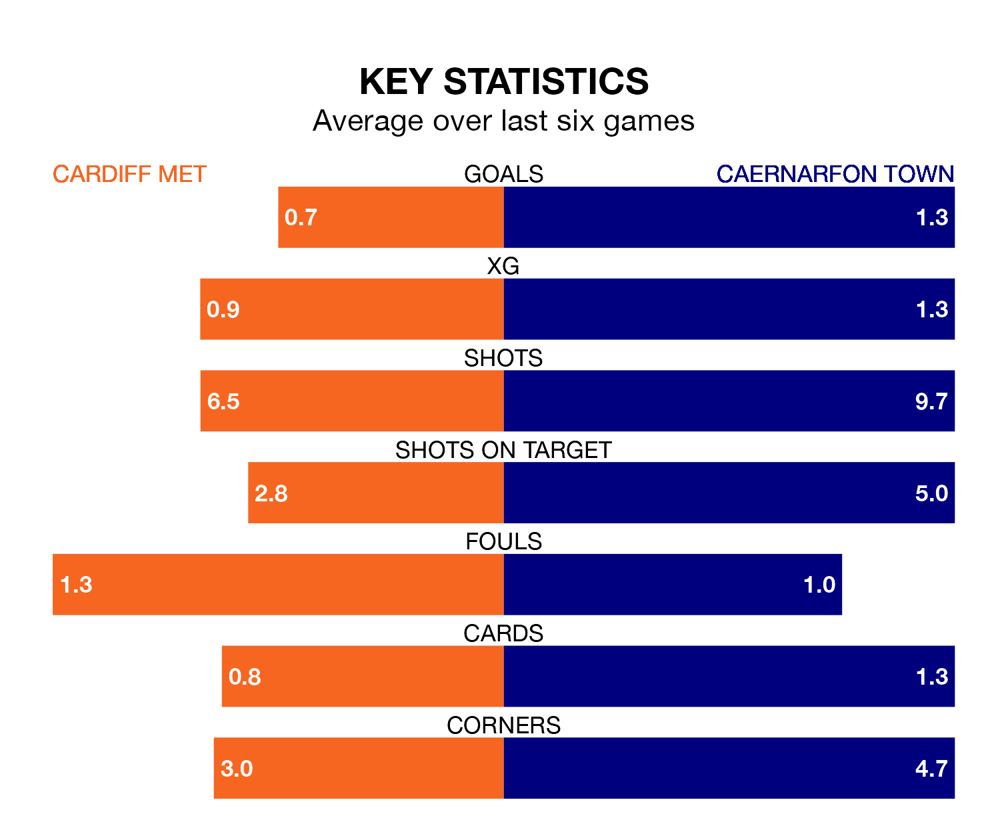

Saturday's early match at the Cardiff International Sports Stadium sees two relegation candidates play each other, as fourth-ranked Cardiff Met host bottom of the table Caernarfon Town.
Cardiff have picked up 35 points from their first 35 Welsh Premier League games, with nine wins and eight draws.
That is three points more than the Canaries have collected, having won nine and drawn five.
With 29 goals in 23 games so far this season, Cardiff are the league's joint-lowest scorers with 1.3 goals per game. And they are conceding more than average, letting in 40 goals at a rate of 1.7 per game.
Caernarfon, meanwhile, are above average scorers, with 1.8 goals per game, compared to a league average of 1.5. They have also conceded 1.8 goals per game.
In the last 10 years, Cardiff and Caernarfon have played each other on 14 occasions. Cardiff won two of them, Caernarfon 11, and they drew once.
On average, the Archers scored 0.9 goals and the Canaries 2.3 in those matches.
Their last meeting was on January 13, when they played out a 2-2 draw.
The Archers are in disappointing form in the Welsh Premier League, with one win and three draws from their last six games.
With two wins and two draws over that period, Town's form is slightly better – they have taken eight points from 18, compared to the hosts' six.
Cardiff's last match was on February 3, a 1-1 draw against Bala Town, with Finn Skiverton getting the goal for the Archers.
Caernarfon drew 1-1 with Connah's Quay last time out, on February 2, with Adam Davies on the scoresheet.
Updated: 11:18 (UTC), 08/02/24